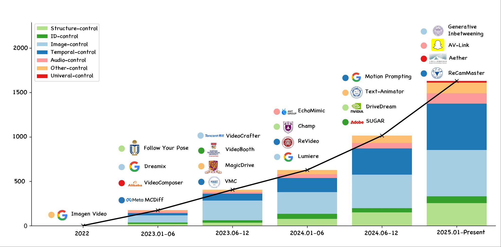
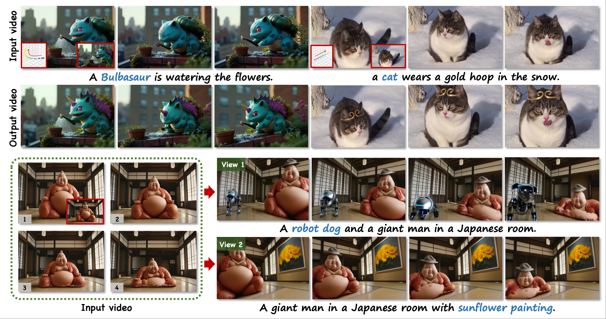
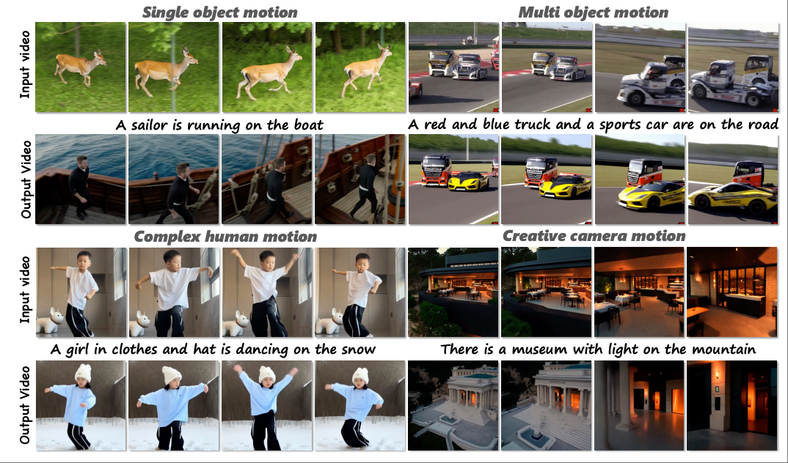
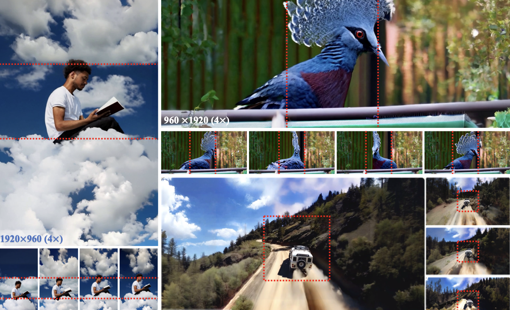
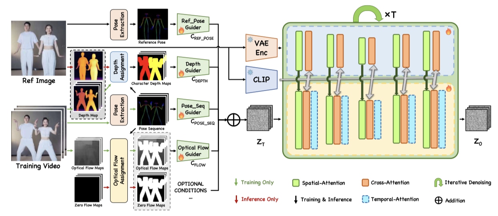
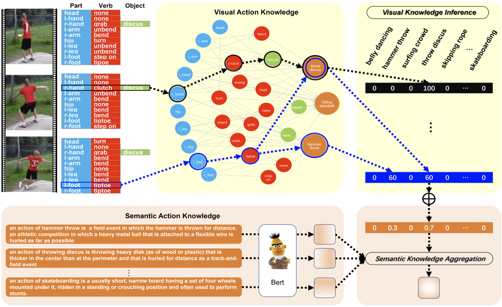

Noah Loake🎓 Second Year Phd StudentDepartment of Applied Economics Guanghua School of Management, Peking University. Email: benchengwang@stu.pku.edu.cn Office: Peking University Science Park, 305-153, No.5 Yiheyuan Road, Haidian District. Notice:I collect and organize information about economics seminars at Peking University and Tsinghua University each semester. If you're interested, you can refer to this shared spreadsheet: [Tencent Doc Link] Econ Seminar. |
 |
Biography
I am a second-year PhD candidate in the Department of Applied Economics at the Guanghua School of Management, Peking University. I am fortunate to be advised by Prof. Xiaobo Zhang and Prof. Li-An Zhou. Previously, I received my M.A. in Economics from Renmin University of China and a B.A. with a minor in Economics from Wuhan University.
My research interests include Development Economics, Political Economics, and Firm Behavior. Specifically, my work focuses on topics such as local government debt and payment arrears, rural-urban migration, as well as grassroots governance and social stability. I utilize large-scale firm-level and government-related datasets to explore government-business interactions within the context of China.
Feel free to contact me by email if you are interested in discussing or collaborating with me.
Education
Peking University, Guanghua School of Management
Sep 2023 - PresentPhD Candidate in Applied Economics
Dissertation Committee: Prof. Xiaobo Zhang, Prof. Li-An Zhou
Renmin University of China, School of Economics
Sep 2021 - Jul 2023M.A. in Economics
Wuhan University, School of Economics and Management
Sep 2016 - Jul 2020B.A. with a Minor in Economics
News
- 08/2025 🎉 My first English-language paper has been accepted for publication in Financial Research Letters (FRL).
- 07/2025 Participated in fieldwork for the Enterprise Survey on Innovation and Entrepreneurship in China (ESIEC) across Zhejiang, Gansu, and Liaoning provinces.
- 05/2025 I presented my paper, "Connection-Based Favoritism Within the Courtroom," at the Development and Political Economy Seminar at PKU.
Selected Publications | Full List
| /*Preprints*/ | |
|  |
🎉 Controllable Video Generation: A Survey Yue Ma, Kunyu Feng, Zhongyuan Hu, Xinyu Wang, Yucheng Wang, Mingzhe Zheng, Xuanhua He, Chenyang Zhu, Hongyu Liu, Yingqing He, Zeyu Wang, Zhifeng Li, Xiu Li, Wei Liu, Dan Xu, Linfeng Zhang, Qifeng Chen arXiv preprint:2507.16869. 2025 |
|  |
🎉 Follow-Your-Creation: Empowering 4D Creation through Video Inpainting Yue Ma, Kunyu Feng, Xinhua Zhang, Hongyu Liu, David Junhao Zhang, Jinbo Xing, Yinhan Zhang, Ayden Yang, Zeyu Wang, Qifeng Chen arXiv preprint:2506.04590. 2025 |
|  |
🎉 Follow-Your-Motion: Video Motion Transfer via Efficient Spatial-Temporal Decoupled Finetuning Yue Ma, Yulong Liu, Qiyuan Zhu, Ayden Yang, Kunyu Feng, Xinhua Zhang, Zhifeng Li, Sirui Han, Chenyang Qi, Qifeng Chen arXiv preprint:2506.05207. 2025 |
| /*Conference*/ | |

|
Follow-Your-Click: Open-domain Regional Image Animation via Short Prompts Yue Ma, Yingqing He, Hongfa Wang, Andong Wang, Chenyang Qi, Chengfei Cai, Xiu Li, Zhifeng Li, Heung-Yeung Shum, Wei Liu, Qifeng Chen The 39th Annual AAAI Conference on Artificial Intelligence (AAAI), 2025[paper] [code] [project page] |
|  |
Follow-Your-Canvas: Higher-Resolution Video Outpainting with Extensive Content Generation Qihua Chen*, Yue Ma*, Hongfa Wang*, Junkun Yuan*, Wenzhe Zhao, Qi Tian, Hongmei Wang, Shaobo Min, Qifeng Chen, Wei Liu The 39th Annual AAAI Conference on Artificial Intelligence (AAAI), 2025[paper] [code] [project page] |
|  |
Follow-Your-Pose v2: Multiple-Condition Guided Character Image Animation for Stable Pose Control Jingyun Xue, Hongfa Wang, Qi Tian, Yue Ma, Andong Wang, Zhiyuan Zhao, Shaobo Min, Wenzhe Zhao, Kaihao Zhang, Heung-Yeung Shum, Wei Liu, Mengyang Liu, Wenhan Luo International Conference on Learning Representations(ICLR) 2025[paper] [code] [project page] |

|
Follow-Your-Emoji: Fine-Controllable and Expressive Freestyle Portrait Animation Yue Ma, Hongyu Liu, Hongfa Wang, Heng Pan, Yingqing He, Junkun Yuan, Ailing Zeng, Chengfei Cai, Heung-Yeung Shum, Wei Liu, Qifeng Chen The ACM Special Interest Group for Computer Graphics and Interactive Techniques(Siggraph Asia) 2024[paper] [code] [project page] |

|
Follow-Your-Handle: Controllable Video Editing via Control Handle Transformations Yue Ma, Xiaodong Cun, Yingqing He, Chenyang Qi, Xintao Wang, Ying Shan, Xiu Li, Qifeng Chen IEEE /CVF Winter Conference on Applications of Computer Vision (WACV), 2025[paper] [code] [project page] |

|
🕺🕺🕺 Follow-Your-Pose 💃💃💃: Pose-Guided Text-to-Video Generation using Pose-Free Videos Yue Ma, Yingqing He, Xiaodong Cun, Xintao Wang, Siran Chen, Ying Shan, Xiu Li, Qifeng Chen The 38th Annual AAAI Conference on Artificial Intelligence (AAAI), 2024PaperDigest Most Influential Papers of AAAI 24 [paper] [code] [project page]
|
|  |
Visual Knowledge Graph for Human Action Reasoning in Videos Yue Ma, Yali Wang, Yue Wu, Ziyu Lyu, Siran Chen, Xiu Li, Yu Qiao The 30th ACM International Conference on Multimedia. (ACM MM), 2022.(Oral Presentation) |

Honors & Awards
| [06/2024] Outstanding graduates student of Beijing. |
| [08/2023] First-Class Scholarship of Tsinghua University. |
| [12/2022] First-Class Scholarship of SIGS, Tsinghua University. |
| [03/2022] Tencent Rhino-Bird Research Elite Program, only 72 students in the world admitted to this program. |
| [09/2020] Scholarship for Academic Excellence of Taiyuan University of Technology. |
| [06/2019] Excellent Scientific Student of Taiyuan University of Technology. |
| [09/2019] Scholarship for Academic Excellence of Taiyuan University of Technology. |
| [09/2018] Excellent Academic Progress Student of Taiyuan University of Technology. |
| [06/2018] Scholarship for Academic Excellence of Taiyuan University of Technology. |
Teaching
| 2025 Fall, 2024 Fall | Economics 101 | (PKU, 02831110) |